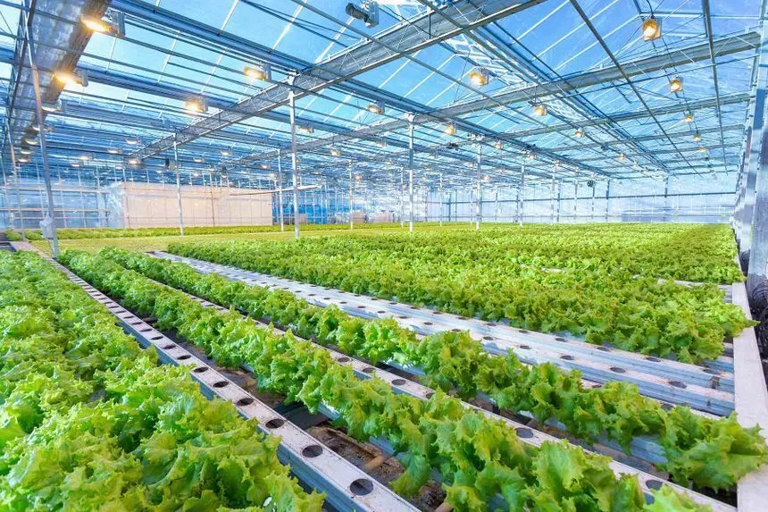
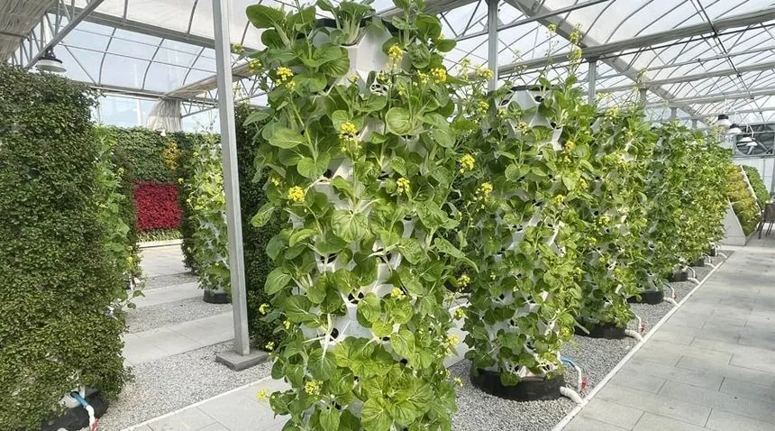
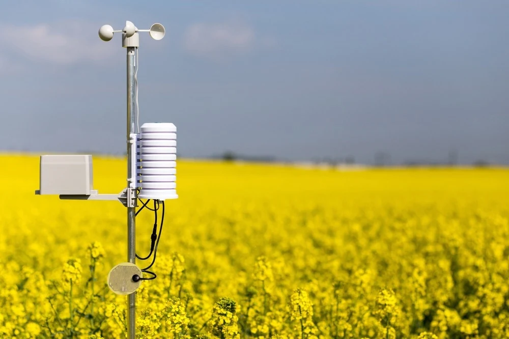
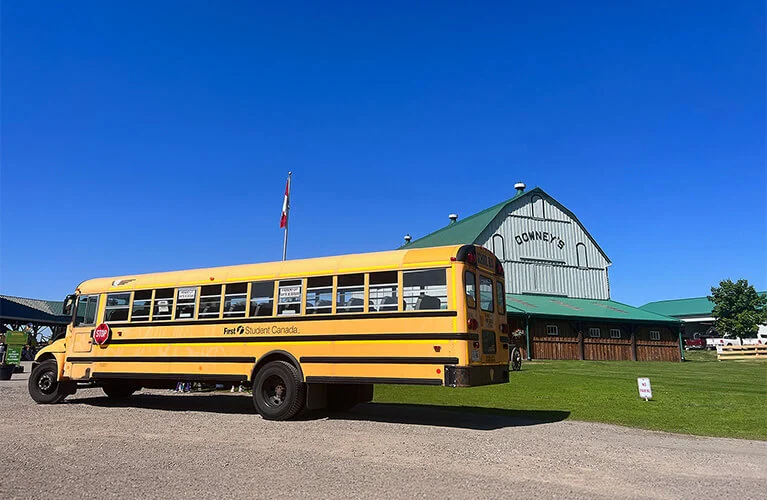
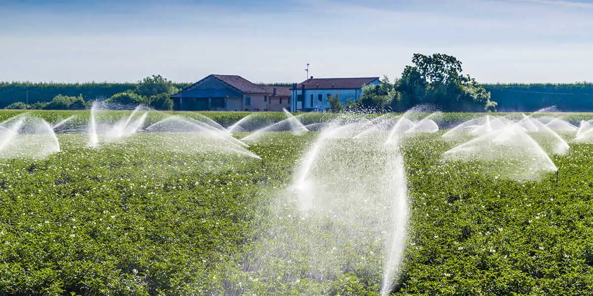
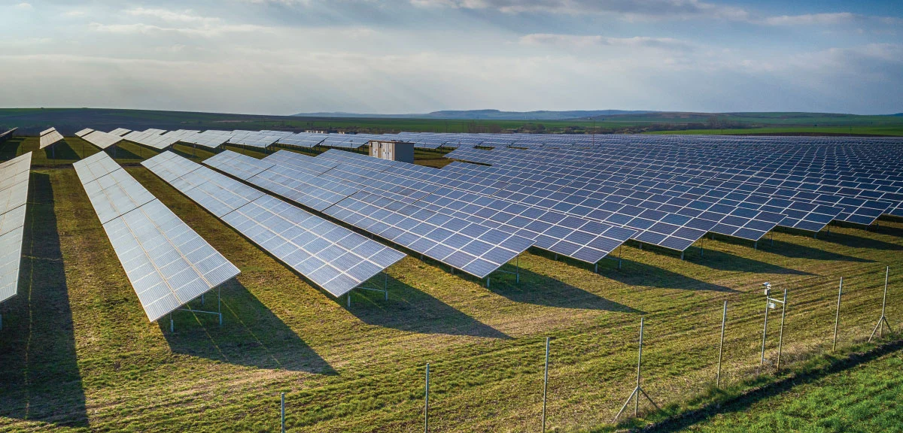

Click any image to view it up close. Explore the moments we captured during our visit.






Watch smart farming technology in action.
Hydroponic systems use up to 90% less water than traditional soil farming.
Plants in controlled environments grow up to twice as fast.
Smart greenhouses enable food production in any season, anywhere.